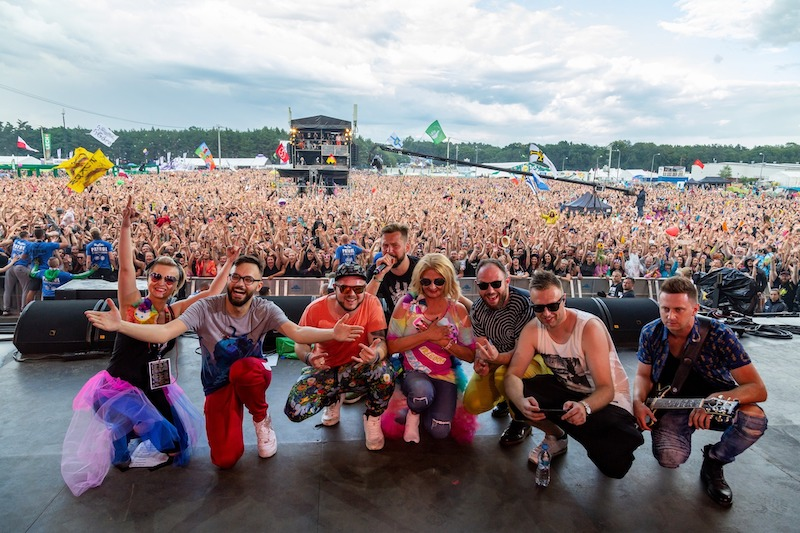

I'm an assistant professor at the Institute of Computer Science, Warsaw University of Technology (PhD
2022).
My current work is focused around music AI, in particular:
I’ve played over 600 shows with some of
Poland’s top artists and
have performed in front of audiences of up to 150 000 people.
I have toured in China, Vietnam, England, Scotland, Germany, Estonia, Lithuania, Ukraine and Poland.
I've worked with The Dumplings, Majka Jeżowska, mm3, Marek Dyjak and
Grubson, among many others. For a quick listen you can peek here , here or here (over 3.5M
views 🤯).
with The Dumplings, 2019

with Majka Jeżowska, 2019
with Grubson, 2018
with The Dumplings, 2019
MM3 China tour 2017 promo poster
MM3 China tour 2019 promo poster
I'm officially endorsed by Istanbul Agop Cymbals and Lime Ears
custom in-ear monitors.
I use Ableton Live software for music processing and production.